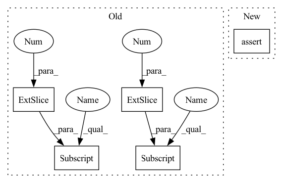

Pattern ID :31655
Before Change
labels = targets[:, 4].copy()
if targets.shape[1] > 5:
mixup = True
ratios = targets[:, -1] .copy()
ratios_o = targets[:, -1] .copy()
else:
mixup = False
ratios = NoneAfter Change
self.augment = augment
def __call__(self, image, targets, input_dim):
assert targets.shape[1] == 6 if self.tracking else 5
lshape = targets.shape[1]
boxes = targets[:, :4].copy()In pattern: SUPERPATTERN
Frequency: 3
Non-data size: 5
Instances Fragment ID: 92295573
Project Name: zhangming8/yolox-pytorch
Commit Name: e162fc0465b1f5d8b3211cdc81fd8eabb6dd55c7
Time: 2021-07-26
Author: zhangming8@github.com
File Name: data/data_augment.py
M Class Name: TrainTransform
N Class Name: TrainTransform
M Method Name: __call__(4)
N Method Name: __call__(4)
M Parent Class:
N Parent Class:
M File Name: data/data_augment.py
N File Name: data/data_augment.py
M Start Line: 196
M End Line: 257
N Start Line: 196
N End Line: 265
Before Change
mag = torch.sqrt(torch.sum(label ** 2, dim=1))
// Temp Fix
valid = (label[:, 0] .abs() < 1000) & (label[:, 1] .abs() < 1000)
valid = valid.float()
valid = (valid >= 0.5) & (mag < self.max_flow)
After Change
return {"gamma": cfg.GAMMA, "max_flow": cfg.MAX_FLOW}
def forward(self, pred, label):
assert (
label.shape[1] == 3
), "Incorrect channel dimension. Set append valid mask to True in DataloaderCreator to append the valid data mask in the target label."
Fragment ID: 92295574
Project Name: neu-vi/ezflow
Commit Name: 5069e90d057f999004885e269c9142bbef437c8f
Time: 2022-01-11
Author: 89991031+prajnan93@users.noreply.github.com
File Name: ezflow/functional/criterion/sequence.py
M Class Name: SequenceLoss
N Class Name: SequenceLoss
M Method Name: forward(3)
N Method Name: forward(3)
M Parent Class: nn.Module
N Parent Class: nn.Module
M File Name: ezflow/functional/criterion/sequence.py
N File Name: ezflow/functional/criterion/sequence.py
M Start Line: 38
M End Line: 42
N Start Line: 34
N End Line: 44
Before Change
labels = targets[:, 4].copy()
if targets.shape[1] > 5:
mixup = True
ratios = targets[:, -1] .copy()
ratios_o = targets[:, -1] .copy()
else:
mixup = False
ratios = NoneAfter Change
self.augment = augment
def __call__(self, image, targets, input_dim):
assert targets.shape[1] == 6 if self.tracking else 5
lshape = targets.shape[1]
boxes = targets[:, :4].copy() Fragment ID: 92295575
Project Name: zhangming8/yolox-pytorch
Commit Name: e162fc0465b1f5d8b3211cdc81fd8eabb6dd55c7
Time: 2021-07-26
Author: zhangming8@github.com
File Name: data/data_augment.py
M Class Name: TrainTransform
N Class Name: TrainTransform
M Method Name: __call__(4)
N Method Name: __call__(4)
M Parent Class:
N Parent Class:
M File Name: data/data_augment.py
N File Name: data/data_augment.py
M Start Line: 196
M End Line: 257
N Start Line: 196
N End Line: 265